1登入
系統只開放學校 Google 帳號（@lsps.tp.edu.tw）登入，私人 Gmail 無法使用。
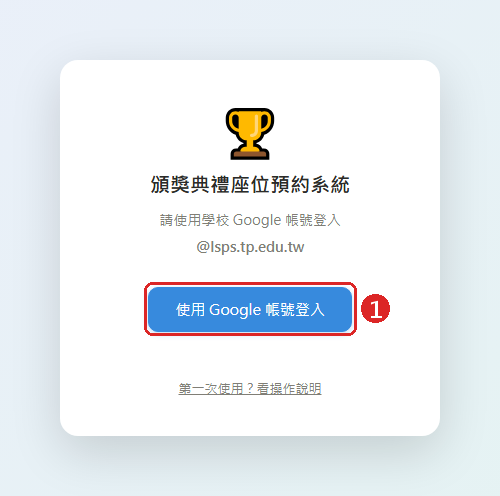
登入畫面
- 1按 使用 Google 帳號登入，在跳出的視窗選擇你的學校帳號。
⚠ 不要從
LINE、Facebook 裡直接點連結登入，Google 會擋。請改用
Chrome、Edge 或 Safari 開啟（見
常見問題）。
2第一次登入：選擇處室
第一次登入時會跳出這個視窗，請選擇你所屬的處室。之後你只能預約、修改自己處室的座位。
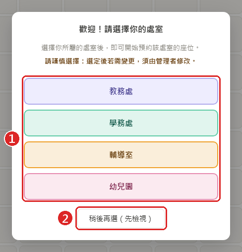
第一次登入的處室選擇
- 1點選你的處室：教務處 學務處 輔導室 幼兒園，再按「確定」。
- 2還不確定的話可以按「稍後再選」，先以只能檢視的身分看座位表。之後可點畫面上方黃色提示列的 選擇我的處室 再選。
⚠ 選定後無法自行更改。選錯了請聯絡管理者（it@lsps.tp.edu.tw）修改。
3畫面介紹
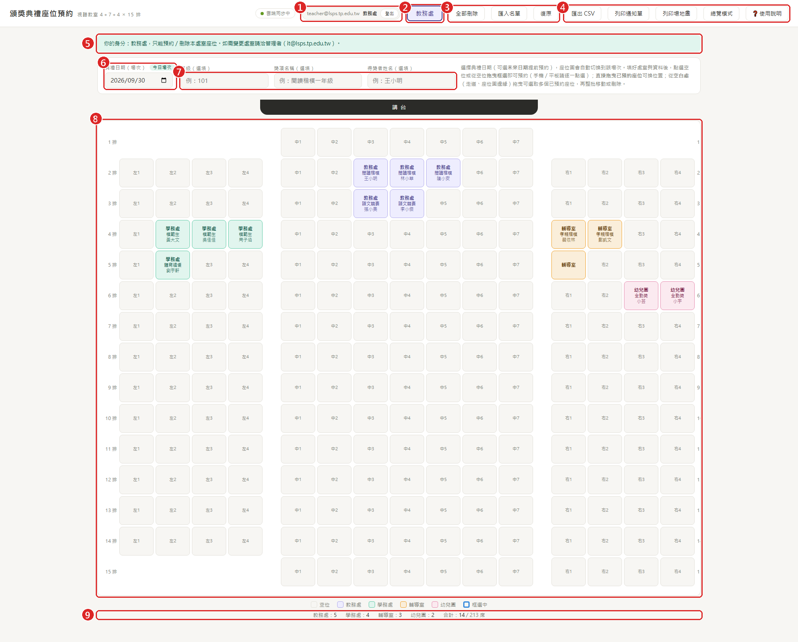
主畫面（以教務處身分為例，點圖可放大）
- 1目前登入的帳號與身分，旁邊是「登出」。
- 2你的處室。一般同仁只會看到自己的處室；管理者可以在各處室之間切換。
- 3編輯工具：全部刪除、匯入名單、復原。
- 4檢視與輸出：匯出 CSV、列印通知單、列印場地圖、總覽模式、使用說明（就是這一頁）。
- 5身分提示列，說明你現在能做什麼。
- 6典禮日期（場次）。每個日期是一份獨立的座位表，可以選未來的日期提前預約。
- 7班級、獎項、姓名（都是選填）。預約之前先填好，這次選的座位都會套用這些資料。
- 8座位圖：講台在上方，灰色是空位，有顏色的是已預約（教務處 學務處 輔導室 幼兒園）。
- 9統計：各處室已預約幾席、全場共幾席。
💡 畫面是即時同步的：其他處室一預約，你的畫面就會自動出現，不用重新整理。
4預約座位
- 在 6 確認典禮日期正確。
- （選填）在 7 輸入班級、獎項、姓名。
- 在座位圖上點一下單一空位，或按住滑鼠拖曳框選多個空位。
- 確認視窗出現後，檢查資料無誤，按 確認預約。
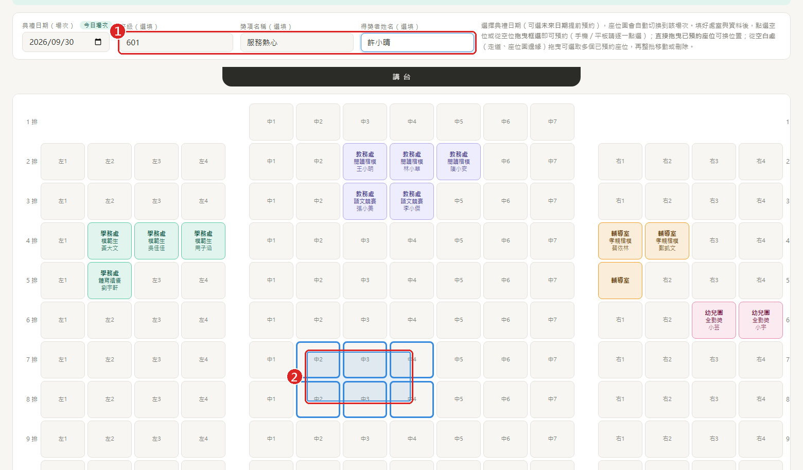
1 先填資料 2 按住滑鼠拖曳，藍框內的空位會被選取
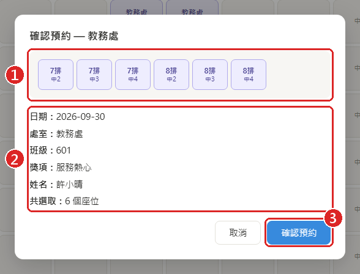
確認預約視窗
- 1這次選到的座位。
- 2日期、處室、班級、獎項、姓名、座位數。
如果這位學生已經有其他獎項，這裡會出現紅色提醒。
- 3沒問題就按 確認預約。
💡
手機／平板：請一個一個
點選座位；手指滑動是捲動座位圖。一次要預約很多座位時，建議用電腦拖曳框選，或用
Excel 匯入。
💡 常見做法：先框選一整塊座位（不填姓名）把位子「佔住」，名單確定後再逐一點座位補上姓名，或整批用 Excel 匯入。
5修改或解除單一座位
點一下已預約的座位就會打開這個視窗。
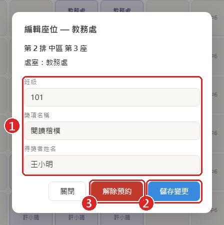
編輯座位視窗
- 1直接修改班級、獎項、姓名。
- 2按 儲存變更 存檔。
- 3按 解除預約 把座位還原成空位。
點到其他處室的座位只能查看資料，不會出現這些按鈕。
6移動與選取座位
已經預約好的座位想換位置，不用刪掉重訂，直接用滑鼠拖過去就好，姓名、獎項、班級會一起搬過去。拖曳時做什麼事，看你從哪裡開始拖：
| 從哪裡開始按住拖曳 | 會做什麼 |
|---|
| 空位 | 框選空位 → 預約（見第 4 步） |
| 自己處室的座位 | 把這一個座位搬到新位置 |
| 空白處（走道、排號、座位圖邊緣） | 框選自己處室的多個座位（變橘框） |
| 橘框座位 | 整批一起搬 |
移動單一座位
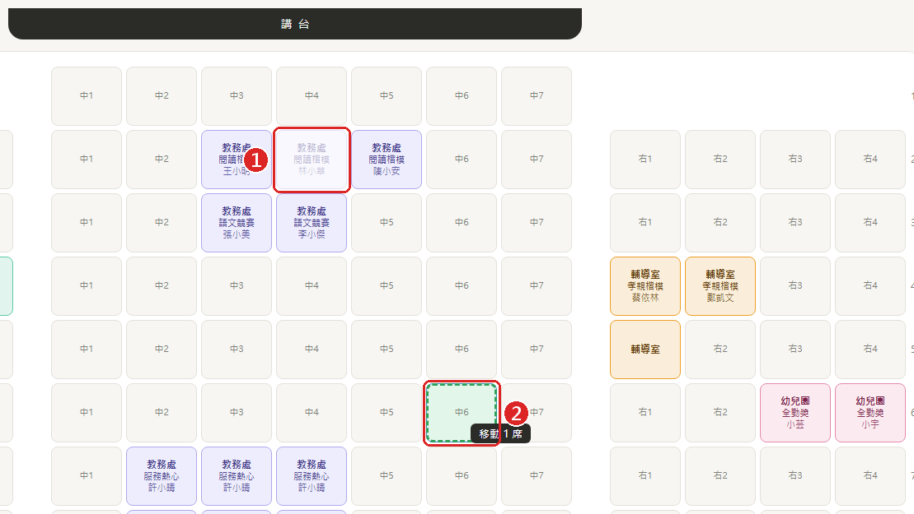
1 按住自己處室的座位 2 拖到新位置，綠色虛線表示可以放
- 在自己處室的座位上按住滑鼠左鍵（游標會變成手掌）。
- 拖到想要的位置：綠色虛線＝可以放，紅色虛線＝不能放。
- 放開滑鼠就完成了。
💡 拖到自己處室的另一個座位上，兩個座位會互相交換（游標旁會顯示「交換座位」）。
一次搬多個座位
- 從座位旁邊的空白處（例如走道、排號、座位圖邊緣）按住滑鼠，拉出一個框，框住要搬的座位。框裡自己處室的座位會變成橘框，下方會出現「已選取 N 席」的小工具列。
- 按住其中任何一個橘框座位拖到新位置，整組會照原本的相對位置一起搬過去。
- 搬完後橘框會跟著到新位置，可以繼續微調。點一下空白處或按 Esc 就取消選取。
💡 想再加選其他座位：按住 Shift 再框選，或按住 Shift 點座位（再點一次可取消）。
⚠ 整批移動時，新位置必須全部是空位，而且不能超出座位區；只要有一個座位放不下，整組都不會移動（那些位置會顯示紅色）。
- 只能移動自己處室的座位；管理者可以移動所有座位。
- 移錯了可以用 復原 還原。
- 拖曳需要滑鼠，手機、平板不支援；可以改用「解除預約」再重新預約。
7刪除座位
刪除一個座位
點那個座位 → 按 解除預約（見第 5 步）。
一次刪除多個座位
- 照上一步的方法，從空白處拖曳框選要刪除的座位（變橘框）。
- 按下方工具列的 刪除（或按鍵盤 Delete）。
- 在確認視窗按 確認刪除。
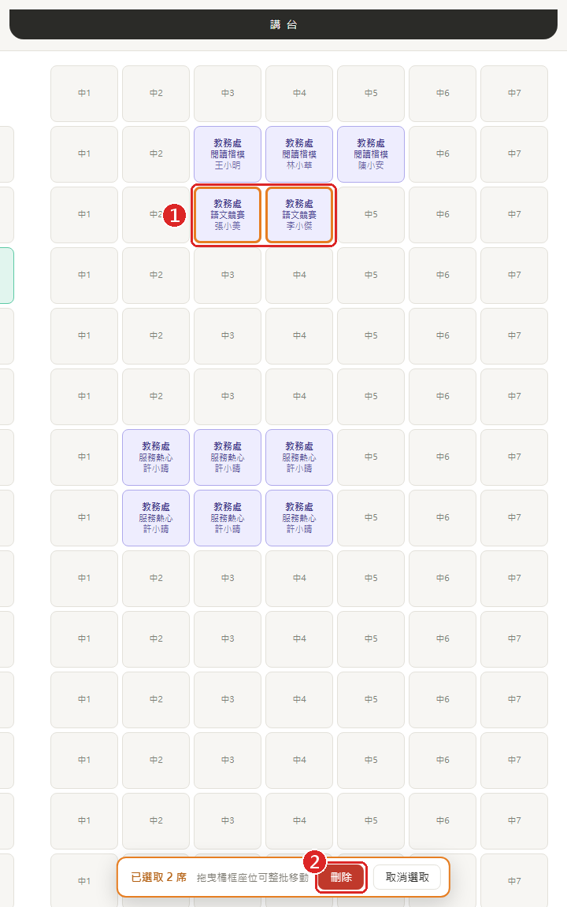
1 選取的座位（橘框） 2 按「刪除」
全部刪除（清空本處室）
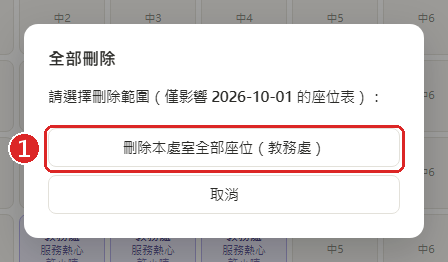
全部刪除視窗
按上方 全部刪除 → 1「刪除本處室全部座位」，會清空這個日期你處室的所有座位，其他日期和其他處室不受影響。
「刪除所有處室全部座位」只有管理者看得到。
8用 Excel 匯入名單
名單很長時，用 Excel 一次匯入最快。
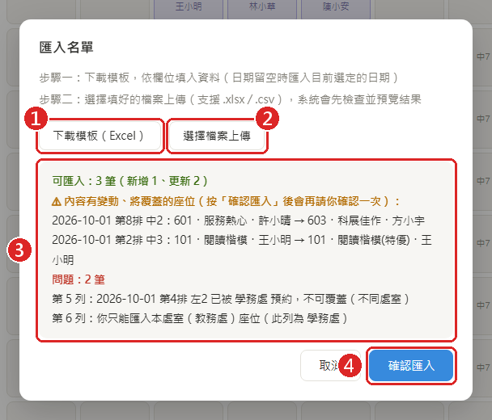
匯入名單視窗（檢查結果範例）
- 1下載模板（Excel），照欄位填寫。
- 2選擇檔案上傳，支援 .xlsx 和 .csv。
- 3系統會先檢查並預覽：可以匯入幾筆、哪些會覆蓋舊資料、哪些列有問題（例如座位已被其他處室預約）。
- 4確認無誤後按 確認匯入。
模板欄位
| 欄位 | 填法 | 範例 |
|---|
| 日期 | 可留空，留空就匯入到畫面上目前選的日期。也可以寫民國年。 | 2026-10-15、115/10/15 |
| 排 | 1～15 | 3 |
| 區 | 左、中、右 | 中 |
| 座號 | 左區、右區 1～4；中區 1～7 | 5 |
| 處室 | 教務處、學務處、輔導室、幼兒園（只能填自己的處室） | 教務處 |
| 班級／獎項／姓名 | 選填，獎項和姓名最多 40 字 | 301／模範生／王小明 |
💡 最省事的改法：按 匯出 CSV 下載目前的座位表，用 Excel 修改幾筆後直接匯回來。沒改的列系統會自動略過，只更新有變動的座位。
⚠ 第 1 排左、右區，以及第 15 排左區，實際上沒有座位，填了會被擋下。
9復原（誤刪救回）
每次刪除或覆蓋座位之前，系統都會自動存一份備份，每個日期保留最近 20 次。
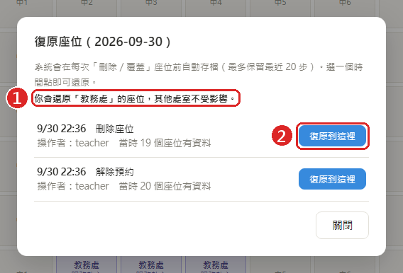
復原視窗
- 按上方 復原。
- 1 先看復原範圍：一般同仁只會還原自己處室的座位，不會動到別的處室。
- 2 找到出錯之前的時間點，按 復原到這裡。
💡 復原前系統會再自動備份一次，所以就算復原錯了，也能再復原回來。
10列印通知單／場地圖、匯出
| 按鈕 | 用途 |
|---|
| 列印通知單 | 把你處室在這個日期的得獎者印成小卡，A4 一頁 8 張，裁開發給學生，上面寫著座位位置。只會印有填姓名或獎項的座位。 |
| 列印場地圖 | 印出整張座位圖，可以貼在視聽教室門口。先切到「總覽模式」再列印，就只會印出有人坐的範圍。 |
| 匯出 CSV | 下載這個日期的完整座位表（Excel 可開啟），可以留存，也可以改完再匯入。 |
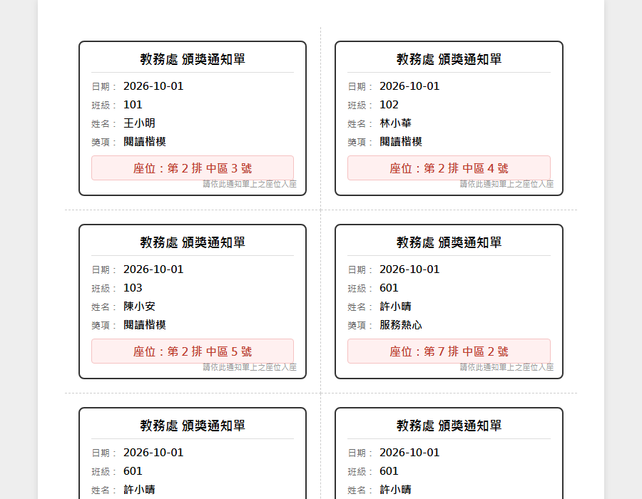
通知單樣式
⚠ 按「列印通知單」沒反應時，通常是瀏覽器擋了彈出視窗。請點網址列右側的提示，允許這個網站開啟彈出視窗。
11總覽模式（看從第幾排開始坐）
典禮當天或排座位時，想一眼看出全場的安排，就按上方的 總覽模式。它會從第 1 排顯示到最後一排有人預約的位置，後面沒人的排不顯示。上方的管理按鈕也會全部隱藏，座位放到最大、字體清楚，適合投影到大螢幕。
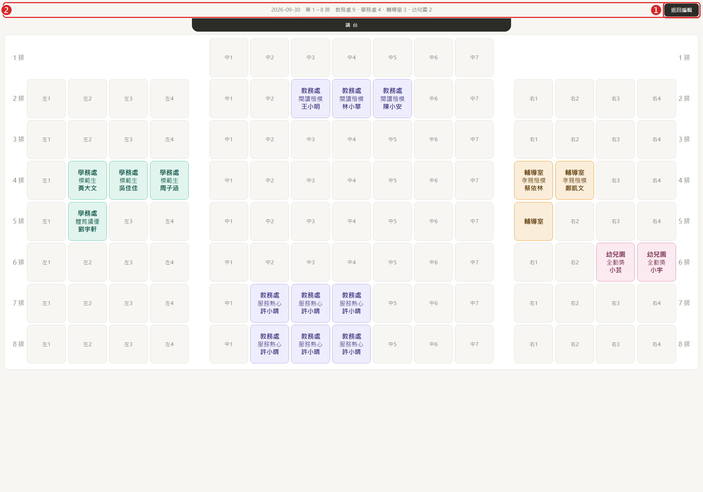
1 按「返回編輯」（或鍵盤 Esc）回到原本畫面 2 日期、顯示到第幾排、各處室人數
- 要看其他日期：先按「返回編輯」，切換日期後再進入總覽模式。
- 總覽模式裡可以點座位查看資料，但不能拖曳框選。要大量預約時，請先按「返回編輯」。
- 投影時可以再按 F11 切換全螢幕，座位會放得更大。
12管理者：成員管理
只有管理者看得到上方的 成員管理 按鈕，用來查看和調整每位同仁的處室。
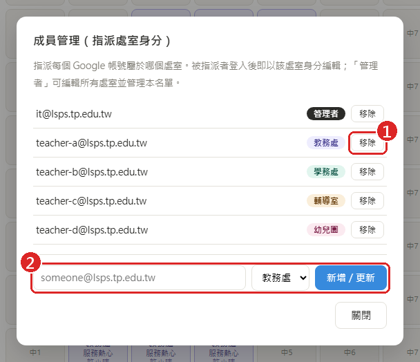
成員管理視窗
- 1移除：刪掉這位同仁的身分。下次登入時，他會重新選處室。
- 2輸入學校帳號並選擇處室或「管理者」，按 新增／更新。已存在的帳號會直接改成新的處室。
💡 同仁的處室改了之後，請他登出再登入一次才會生效。
?常見問題
從 LINE 點連結，沒辦法登入？
Google 不允許在 LINE、Facebook、Instagram 的內建瀏覽器裡登入。從 LINE 開啟時，系統會自動改用手機的瀏覽器開啟。如果還是出現下面的紅字，請點右上角「⋯」選單，選「用瀏覽器開啟」。
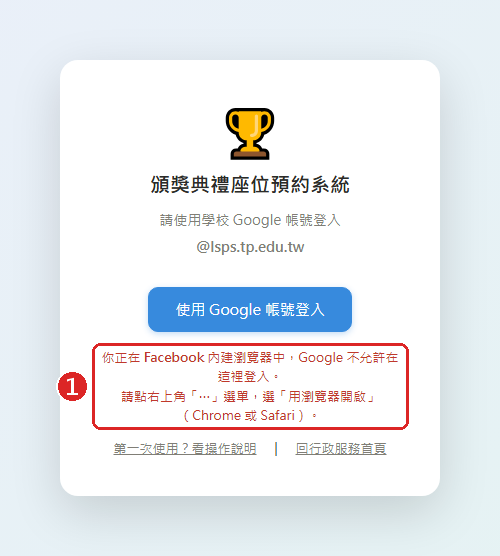
在內建瀏覽器中會看到的提示
點座位沒辦法預約，一直叫我「選擇處室」？
你還沒選處室，目前只能檢視。請點畫面上方黃色提示列的 選擇我的處室（見第 2 步）。
選錯處室了，怎麼改？
處室選定後無法自行更改，請聯絡管理者 it@lsps.tp.edu.tw 修改。改完後請登出再登入。
出現「權限不足：你只能編輯自己處室的座位」？
你想修改的座位屬於其他處室，或是那個座位剛好被別的處室搶先預約了。請重新整理頁面，確認座位的最新狀態。
跳出「此學生已獲其他獎項」的紅字提醒？
系統發現同一個姓名在其他座位（可能是別的日期或別的處室）已經有獎項。這只是提醒，確認是同一位學生、或只是同名同姓後，照常預約即可。
匯入時顯示「日期格式錯誤」？
日期請寫成 2026-10-15 或民國年 115/10/15，或是直接把日期欄留空（會用畫面上選的日期）。
不小心刪掉了！
按上方的 復原，選刪除之前的時間點即可救回（見第 9 步）。
有問題請洽資訊組（it@lsps.tp.edu.tw）